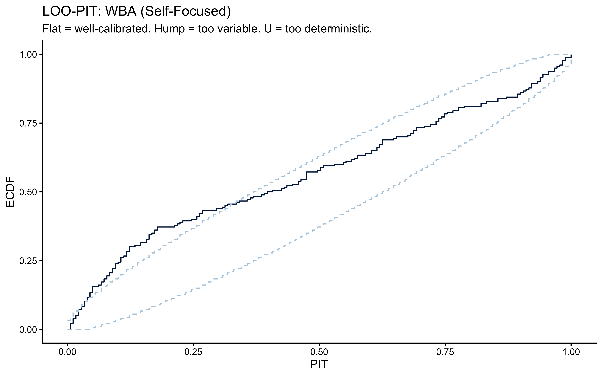
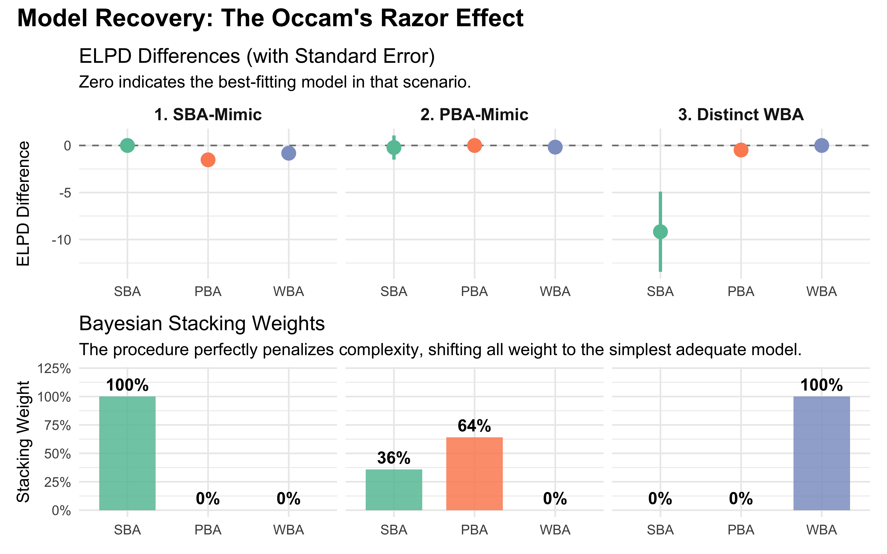

Chapter 5 From simulation to model fitting
In Chapter 4, we formalized verbal models into computational agents and explored their behavior through simulation by setting their parameters (like bias rate or WSLS rules). However, when analyzing real experimental data, we don’t know the true parameter values underlying a participant’s behavior. The core task shifts from simulation to parameter estimation: inferring the plausible values of model parameters given the observed data.
5.1 Learning Goals
This chapter transitions from simulating predefined models (Chapter 4) to inferring model parameters from data using Bayesian methods. By the end of this chapter, you will be able to:
- Model Cognitive Processes: Apply these techniques to estimate parameters for simple cognitive strategies, including biased choice and different types of memory models.
- Master Reparameterization: Learn to rethink the mathematical form of models. You will appreciate the utility of the log-odds transformation for mapping bounded probability parameters into unbounded spaces.
- Read MCMC Diagnostics: Learn the mandatory diagnostic battery for Bayesian inference, specifically focusing on chain convergence (\(\hat{R}\)) and Effective Sample Size (ESS).
In a rigorous Bayesian workflow, we never fit a model to empirical data without validating it first. Therefore, throughout this chapter, we will fit our models to a single simulated dataset where we know the ground truth. This allows us to learn the mechanics of Stan and verify our single-fit posterior. In the next chapter, we will scale this up into a full rigorous validation pipeline (Parameter Recovery and predictive checks).
5.2 The Challenge: Inferring Latent Parameters
Why is this a challenge?
Parameters are Unseen: Cognitive parameters (like bias strength, memory decay, learning rate) are not directly observable; we must infer them from behavior (choices, RTs, etc.).
Behavior is Noisy: Human behavior is variable. Our models need to account for this noise while extracting the underlying parameter signal.
Model Plausibility: We need to determine not just if a model fits, but how well it fits, what are its strengths and limitations, and whether the estimated parameter values are theoretically meaningful.
Consider the biased agent from Chapter 4. We simulated agents with a known rate. Now, imagine you only have the sequence of choices (the h data) from an unknown agent. How can you estimate the underlying rate that most likely generated those choices?
Our Approach: Bayesian Inference with Stan
This chapter introduces Bayesian inference as our primary tool for parameter estimation. The Bayesian approach allows us to combine prior knowledge about parameters with information from the observed data (likelihood) to arrive at an updated understanding (posterior distribution) of the parameters. We will use Stan, a powerful probabilistic programming language, implemented via the cmdstanr R package, to:
- Specify Models: Define our cognitive models formally, including parameters and their prior distributions.
- Fit Models: Use Stan’s algorithms (primarily Hamiltonian Monte Carlo - HMC, and a faster but more risky approximation method called pathfinder) to sample from the posterior distribution of parameters given the data.
- Evaluate Fits: Examine the results to understand parameter estimates and their uncertainty.
As a crucial validation step, we will first apply these methods to simulated data, where we know the true parameters. This allows us to check if our models and fitting procedures work correctly – a process called parameter recovery.
5.3 Simulating data
As usual we start with simulated data, where we know the underlying mechanisms and parameter values.
Simulated data are rarely enough (empirical data often offer unexpected challenges), but they are a great starting point to stress test your model: does the model reconstruct the right parameter values? Does it reproduce the overall patterns in the data?
Here we build a new simulation of random agents with bias and noise. The code and visualization is really nothing different from last chapter.
# Flag to control whether to regenerate simulation/fitting results for the knitted files
# Set to TRUE to rerun everything (takes time!), FALSE to load saved results.
regenerate_simulations <- TRUE # Or TRUE
# Load required packages using pacman::p_load
# This function installs packages if missing, then loads them.
pacman::p_load(
tidyverse, # Data manipulation and plotting
here, # Robust file paths
cmdstanr, # Stan interface
posterior, # Posterior analysis
bayesplot, # Plotting MCMC
furrr, # Parallel processing
future # Future backend
)
# Parallel Setup: Leave 2 cores free for system stability
n_cores <- parallel::detectCores() - 2
plan(multisession, workers = n_cores)
# Optional: Set a default ggplot theme
theme_set(theme_classic())
# --- Simulate Data for Fitting ---
# Goal: Generate data from known models/parameters to test our fitting procedures.
trials <- 120 # Number of trials per simulated agent
# Define the agent function (copied from previosu chapter)
# This agent chooses '1' with probability 'rate', potentially adding noise.
RandomAgentNoise_f <- function(rate, noise) {
# Ensure rate is probability (in case log-odds are passed, though not here)
rate_prob <- plogis(rate) # Assumes rate might be log-odds; use identity if rate is already probability
choice <- rbinom(1, 1, rate_prob) # Base choice
if (noise > 0 & rbinom(1, 1, noise) == 1) { # Check if noise occurs
choice <- rbinom(1, 1, 0.5) # Override with random 50/50 choice
}
return(choice)
}
# --- Generate Data Across Different Conditions ---
# Define relative paths for saving/loading simulation data
sim_data_dir <- "simdata" # Assumes a 'simdata' subdirectory
sim_data_file <- here(sim_data_dir, "04_randomnoise.csv")
# Create directory if it doesn't exist
if (!dir.exists(sim_data_dir)) dir.create(sim_data_dir)
if (regenerate_simulations || !file.exists(sim_data_file)) {
cat("Generating new simulation data...\n")
# Use expand_grid for cleaner parameter combinations
param_grid <- expand_grid(
noise = seq(0, 0.5, 0.1), # Noise levels
rate = seq(0, 1, 0.1) # Bias rate levels (probability scale)
)
# Use map_dfr for efficient simulation across parameters
d <- pmap_dfr(param_grid, function(noise, rate) {
# Simulate choices for one agent/condition
choices <- map_int(1:trials, ~RandomAgentNoise_f(qlogis(rate), noise)) # Convert rate to log-odds for function if needed
# Create tibble for this condition
tibble(
trial = 1:trials,
choice = choices,
true_rate = rate, # Store the true rate used for generation
true_noise = noise # Store the true noise used
)
}) %>%
# Calculate cumulative rate for visualization
group_by(true_rate, true_noise) %>%
mutate(cumulative_rate = cumsum(choice) / row_number()) %>%
ungroup()
# Save the generated data
write_csv(d, sim_data_file)
cat("Generated new simulation data and saved to", sim_data_file, "\n")
} else {
# Load existing simulation data
d <- read_csv(sim_data_file)
cat("Loaded existing simulation data from", sim_data_file, "\n")
}## Generating new simulation data...
## Generated new simulation data and saved to /Users/au209589/Dropbox/Teaching/AdvancedCognitiveModeling23_book/simdata/04_randomnoise.csv# --- Visualize Simulated Data ---
# Plot cumulative rate, faceted by noise level
p1 <- ggplot(d, aes(x = trial, y = cumulative_rate, group = true_rate, color = true_rate)) +
geom_line(alpha = 0.8) +
geom_hline(yintercept = 0.5, linetype = "dashed") +
scale_color_viridis_c() + # Use perceptually uniform color scale
facet_wrap(~paste("Noise =", true_noise)) + # Facet by noise level
labs(
title = "Simulated Choice Behavior (Cumulative Rate)",
subtitle = "Agents with different bias rates and noise levels",
x = "Trial Number",
y = "Cumulative Proportion Choosing 'Right'",
color = "True Bias Rate"
) +
theme_minimal() +
ylim(0, 1)
print(p1)
5.4 Building our First Stan Model: Inferring Bias Rate
N.B. Refer to the video and slides for the step by step build-up of the Stan code.
Let’s use Stan to estimate the underlying bias rate (which we’ll call theta in the model) from just the sequence of choices (h) generated by one of our simulated agents. This model is represented in the

Figure 5.1: Binomial Model with Formulas

Figure 5.2: Kruschke-Style Binomial Model
We’ll start with a simple case: an agent with rate = 0.8 and noise = 0.
Preparing Data for Stan Why a list? Well, dataframes (now tibbles) are amazing. But they have a big drawback: they require each variable to have the same length. Lists do not have that limitation, they are more flexible. So, lists. We’ll have to learn how to live with them.
# Subset data for one specific agent simulation (rate=0.8, noise=0)
d1 <- d %>% filter(true_rate == 0.8, true_noise == 0.0) # Make sure noise level matches
# Stan requires data in a list format
data_for_stan <- list(
n = trials, # Number of trials (integer)
h = d1$choice # Vector of choices (0s and 1s) for this agent
)
str(data_for_stan) # Show the structure of the list## List of 2
## $ n: num 120
## $ h: int [1:120] 1 1 1 1 0 1 1 1 1 1 ...5.4.1 Model
We write the stan code within the R code (so I can show it to you more easily), then we save it as a stan file, which can be loaded at a later stage in order to compile it. [Missing: more info on compiling etc.]
Remember that the minimal Stan model requires 3 chunks, one specifying the data it will need as input; one specifying the parameters to be estimated; one specifying the model within which the parameters appear, and the priors for those parameters.
# This R chunk defines the Stan code as a string and writes it to a file.
# It's marked eval=FALSE because we don't run the R code defining the string here,
# but the Stan code itself IS the important content.
stan_model_code <- "
// Stan Model: Simple Bernoulli for Bias Estimation
// Goal: Estimate the underlying probability (theta) of choosing 1 ('right')
// given a sequence of binary choices.
// 1. Data Block: Declares the data Stan expects from R
data {
int<lower=1> n; // Number of trials (must be at least 1)
array[n] int<lower=0, upper=1> h; // Array 'h' of length 'n' containing choices (0 or 1)
}
// 2. Parameters Block: Declares the parameters the model will estimate
parameters {
real<lower=0, upper=1> theta; // The bias parameter (probability), constrained between 0 and 1
}
// 3. Model Block: Defines the priors and the likelihood
model {
// Prior: Our belief about theta *before* seeing the data.
// We use a Beta(1, 1) prior, which is equivalent to a Uniform(0, 1) distribution.
// This represents maximal prior ignorance about the bias.
// 'target +=' adds the log-probability density to the overall model log-probability.
target += beta_lpdf(theta | 1, 1); // lpdf = log probability density function
// Likelihood: How the data 'h' depend on the parameter 'theta'.
// We model each choice 'h' as a Bernoulli trial with success probability 'theta'.
// The model assesses how likely the observed sequence 'h' is given a value of 'theta'.
target += bernoulli_lpmf(h | theta); // lpmf = log probability mass function (for discrete data)
}
// 4. Generated Quantities Block (Optional but useful)
// Code here is executed *after* sampling, using the estimated parameter values.
// Useful for calculating derived quantities or predictions.
generated quantities {
// let's generate the prior for visualization
// first we define it
real<lower = 0, upper = 1> prior_theta;
// then we generate it
prior_theta = beta_rng(1, 1); // Draw a random sample from the prior distribution for theta
}
"
# Define relative path for Stan model file
stan_model_dir <- "stan"
stan_file_bernoulli <- here(stan_model_dir, "04_SimpleBernoulli.stan")
# Create directory if needed
if (!dir.exists(stan_model_dir)) dir.create(stan_model_dir)
# Write the Stan code to the file
writeLines(stan_model_code, stan_file_bernoulli)
cat("Stan model written to:", stan_file_bernoulli, "\n")## Stan model written to: /Users/au209589/Dropbox/Teaching/AdvancedCognitiveModeling23_book/stan/04_SimpleBernoulli.stanCompiling and Fitting the Stan Model
Now we use cmdstanr to compile this model (translating it into efficient C++ code) and then run the MCMC sampler to get posterior estimates for theta.
## --- Compile and Fit ---
# Specify model file path
stan_file_bernoulli <- here("stan", "04_SimpleBernoulli.stan")
# Define path for saving fitted model object
stan_results_dir <- "simmodels"
model_file_bernoulli <- here(stan_results_dir, "04_SimpleBernoulli.rds")
if (!dir.exists(stan_results_dir)) dir.create(stan_results_dir)
if (regenerate_simulations || !file.exists(model_file_bernoulli)) {
cat("Compiling and fitting Stan model (Bernoulli)...\n")
# Compile the Stan model (only needs to be done once unless code changes)
mod_bernoulli <- cmdstan_model(stan_file_bernoulli,
cpp_options = list(stan_threads = FALSE), # Enable threading
stanc_options = list("O1")) # Basic optimization
# Sample from the posterior distribution using MCMC
fit_bernoulli <- mod_bernoulli$sample(
data = data_for_stan, # The data list we prepared
seed = 123, # For reproducible MCMC sampling
chains = 4, # Number of parallel Markov chains (recommend 4)
parallel_chains = 4, # Run chains in parallel
#threads_per_chain = 1, # For within-chain parallelization (usually 1 is fine)
iter_warmup = 1000, # Number of warmup iterations per chain (discarded)
iter_sampling = 2000, # Number of sampling iterations per chain (kept)
refresh = 0, # How often to print progress updates. 0 means never since the model is so fast
max_treedepth = 10, # Controls complexity of MCMC steps (adjust if needed)
adapt_delta = 0.8 # Target acceptance rate (adjust if divergences occur)
)
# Save the fitted model object
fit_bernoulli$save_object(file = model_file_bernoulli)
cat("Model fit completed and saved to:", model_file_bernoulli, "\n")
} else {
# Load existing fitted model object
fit_bernoulli <- readRDS(model_file_bernoulli)
cat("Loaded existing model fit from:", model_file_bernoulli, "\n")
}## Compiling and fitting Stan model (Bernoulli)...
## Running MCMC with 4 parallel chains...
##
## Chain 1 finished in 0.0 seconds.
## Chain 2 finished in 0.0 seconds.
## Chain 3 finished in 0.0 seconds.
## Chain 4 finished in 0.0 seconds.
##
## All 4 chains finished successfully.
## Mean chain execution time: 0.0 seconds.
## Total execution time: 0.7 seconds.
##
## Model fit completed and saved to: /Users/au209589/Dropbox/Teaching/AdvancedCognitiveModeling23_book/simmodels/04_SimpleBernoulli.rds5.4.2 Assessing MCMC Health (The Mandatory Diagnostics)
Before we look at the parameter estimates, we MUST check whether the model was able to sample the posterior space: the health of the MCMC chains. Fitting a model is like sending a robotic explorer (the sampler) to map a landscape (the posterior). If the robot’s tracks are broken, the map is mathematically invalid. We must check:
- Divergences: Did the simulation crash? (Zero tolerance).
- \(\hat{R}\) (R-hat): Did our 4 independent chains map the exact same space? (Must be strictly \(< 1.01\)).
- Effective Sample Size (ESS): Do we have enough truly independent draws? (Bulk and Tail ESS should be \(> 400\)).
- Visual Diagnostics: Trace plots (should look like a “hairy caterpillar”) and Rank Histograms (should be uniform across chains).
Let’s run this mandatory diagnostic battery on our first fit:
# 1. Check for Divergent Transitions
diagnostics <- fit_bernoulli$diagnostic_summary()
cat("Divergent transitions per chain:", paste(diagnostics$num_divergent, collapse = ", "), "\n")## Divergent transitions per chain: 0, 0, 0, 0# 2. Check R-hat and ESS metrics
fit_summary <- fit_bernoulli$summary(variables = "theta")
print(fit_summary %>% select(variable, mean, rhat, ess_bulk, ess_tail))## # A tibble: 1 × 5
## variable mean rhat ess_bulk ess_tail
## <chr> <dbl> <dbl> <dbl> <dbl>
## 1 theta 0.836 1.00 2661. 3744.# 3. Visual Checks (Trace and Rank Plots)
draws_df <- as_draws_df(fit_bernoulli$draws())
# A healthy trace plot is well-mixed with no wandering
p_trace <- mcmc_trace(draws_df, pars = "theta") +
theme_classic() +
ggtitle("Trace Plot: Well-mixed chains")
# A healthy rank histogram has uniform bars across all chains
p_rank <- mcmc_rank_hist(draws_df, pars = "theta") +
theme_classic() +
ggtitle("Rank Histogram: Chains explored the same space")
p_trace / p_rank
# 4. Look at the Posterior Estimate
ggplot(draws_df) +
geom_density(aes(theta, fill = "Posterior"), alpha = 0.6) +
geom_density(aes(prior_theta, fill = "Prior"), alpha = 0.6) +
geom_vline(xintercept = 0.8, linetype = "dashed", color = "black", linewidth = 1.2) +
scale_fill_manual(values = c("Posterior" = "blue", "Prior" = "red")) +
labs(
title = "Parameter Recovery (Rate, Theta)",
x = "Rate/Theta (Probability of Choosing Right)",
y = "Density",
fill = "Distribution"
) +
theme_classic()
As we can see from the posterior estimates and the prior posterior update check, our model is doing a decent job. It doesn’t exactly reconstruct the rate of 0.8, but 0.755 is pretty close and 0.8 is included within the credible interval.
Now we build the same model, but using the log odds scale for the theta parameter, which will become useful later when we condition theta on variables and build multilevel models (as we can do what we want in a log odds space and it will always be bound between 0 and 1).
Alternative Parameterization: Log-Odds Scale
While estimating theta directly as a probability (0-1) is intuitive, it can sometimes be computationally advantageous or necessary for more complex models (like multilevel models in a later chapter) to estimate parameters on an unbounded scale. The logit (log-odds) transformation converts a probability \(p\) (from 0 to 1) to log-odds (from \(-\infty\) to \(+\infty\)): \[\text{logit}(p) = \log\left(\frac{p}{1-p}\right)\] The inverse transformation (logistic function or inv_logit) converts log-odds back to probability: \[\text{inv\_logit}(x) = \frac{1}{1 + \exp(-x)}\] We can rewrite our Stan model to estimate theta on the log-odds scale. However, we must be careful with our priors, as the non-linear transformation distorts the probability mass.
Too Narrow: A standard normal prior \(\lambda \sim \text{Normal}(0, 1)\) concentrates mass around \(p=0.5\), biasing the model toward chance.
Too Wide: A wide prior (e.g., \(\lambda \sim \text{Normal}(0, 5)\)) pushes mass to the extremes (0 and 1), implying we expect deterministic behavior.
Just Right: To approximate a uniform distribution on the probability scale (like our Beta(1,1)), we typically use \(\lambda \sim \text{Normal}(0, 1.5)\). This is the specific “sweet spot” that is essentially flat, avoiding both the center-bias of narrow priors and the extreme-bias of wide priors.
# Stan code using logit parameterization
stan_model_logit_code <- "
// Stan Model: Simple Bernoulli (Logit Parameterization)
// Estimate theta on the log-odds scale
data {
int<lower=1> n;
array[n] int<lower=0, upper=1> h;
}
parameters {
real theta_logit; // Parameter is now on the unbounded log-odds scale
}
model {
// Prior on log-odds scale (e.g., Normal(0, 1.5))
// Normal(0, 1.5) on log-odds corresponds roughly to a diffuse prior on probability scale
target += normal_lpdf(theta_logit | 0, 1.5);
// Likelihood using the logit version of the Bernoulli PMF
// This tells Stan that theta_logit is on the log-odds scale
target += bernoulli_logit_lpmf(h | theta_logit);
}
generated quantities {
// Generate the prior for viz purposes
real prior_theta = inv_logit(normal_rng(0, 1.5)); // Sample from the log-odds prior
// Convert estimate back to probability scale for easier interpretation
real<lower=0, upper=1> theta = inv_logit(theta_logit);
}
"
# Define file path
stan_file_logit <- here(stan_model_dir, "04_SimpleBernoulli_logodds.stan")
# Write the Stan code to the file
writeLines(stan_model_logit_code, stan_file_logit)
cat("Stan model (logit) written to:", stan_file_logit, "\n")
## With the logit format
## Specify where the model is
file <- here("stan", "04_SimpleBernoulli_logodds.stan")
# File path for saved model
model_file <- here("simmodels","04_SimpleBernoulli_logodds.rds")
# Check if we need to rerun the simulation
if (regenerate_simulations || !file.exists(model_file)) {
# Compile the model
mod <- cmdstan_model(file,
cpp_options = list(stan_threads = FALSE),
stanc_options = list("O1"))
# The following command calls Stan with specific options.
samples_biased_logodds <- mod$sample(
data = data_for_stan,
seed = 123,
chains = 2,
parallel_chains = 2,
#threads_per_chain = 1,
iter_warmup = 1000,
iter_sampling = 2000,
refresh = 0,
max_treedepth = 20,
adapt_delta = 0.99,
)
# Save the fitted model
samples_biased_logodds$save_object(file = model_file)
cat("Generated new model fit and saved to", model_file, "\n")
} else {
# Load existing results
cat("Loading biased model (log-odds) samples...\n")
samples_biased_logodds <- readRDS(model_file)
cat("Available parameters:", paste(colnames(as_draws_df(samples_biased_logodds$draws())), collapse = ", "), "\n")
cat("Loaded existing model fit from", model_file, "\n")
}5.4.3 Summarizing the results
## # A tibble: 4 × 10
## variable mean median sd mad q5 q95 rhat ess_bulk ess_tail
## <chr> <dbl> <dbl> <dbl> <dbl> <dbl> <dbl> <dbl> <dbl> <dbl>
## 1 lp__ -69.6 -69.3 0.701 0.307 -71.0 -69.1 1.00 1019. 916.
## 2 theta_logit 1.08 1.08 0.206 0.208 0.757 1.43 1.00 1175. 820.
## 3 prior_theta 0.499 0.501 0.274 0.355 0.0706 0.922 1.00 3902. 3875.
## 4 theta 0.745 0.746 0.0387 0.0394 0.681 0.806 1.00 1175. 820.# Extract posterior samples and include sampling of the prior:
draws_df_biased_logodds <- as_draws_df(samples_biased_logodds$draws())
# Explicitly extract theta parameter
theta_param_logodds <- draws_df_biased_logodds$theta
cat("Successfully extracted theta parameter with", length(theta_param_logodds), "values\n")## Successfully extracted theta parameter with 4000 valuesggplot(draws_df_biased_logodds, aes(.iteration, theta, group = .chain, color = .chain)) +
geom_line() +
theme_classic()
# Now let's plot the density for theta (prior and posterior)
ggplot(draws_df_biased_logodds) +
geom_density(aes(theta), fill = "blue", alpha = 0.8) +
geom_density(aes(prior_theta), fill = "red", alpha = 0.8) +
geom_vline(xintercept = 0.8, linetype = "dashed", color = "black", size = 1.5) +
xlab("Rate") +
ylab("Posterior Density") +
theme_classic()
We can see that the results are very similar.
5.5 Bonus content: fitting the model with pathfinder vs mcmc
## Bonus content: Benchmarking NUTS, Pathfinder, and Pathfinder-initialized NUTS
# We will compare three methods:
# 1. Standard NUTS (MCMC)
# 2. Pathfinder (Variational Inference)
# 3. NUTS initialized with Pathfinder
# Define file paths for all three models
file_nuts_std <- here("simmodels", "04_benchmark_nuts_std.rds")
file_pathfinder <- here("simmodels", "04_benchmark_pathfinder.rds")
file_nuts_init <- here("simmodels", "04_benchmark_nuts_init.rds")
stan_file_logit <- here::here("stan", "04_SimpleBernoulli_logodds.stan")
mod <- cmdstan_model(
stan_file_logit,
cpp_options = list(stan_threads = FALSE),
stanc_options = list("O1")
)
# --- 1. Run Standard NUTS (Baseline) ---
if (regenerate_simulations || !file.exists(file_nuts_std)) {
cat("Running Standard NUTS...\n")
fit_nuts_std <- mod$sample(
data = data_for_stan,
seed = 123,
chains = 4,
parallel_chains = 4,
iter_warmup = 1000, # Standard warmup
iter_sampling = 2000,
refresh = 0
)
fit_nuts_std$save_object(file_nuts_std)
} else {
fit_nuts_std <- readRDS(file_nuts_std)
}## Running Standard NUTS...
## Running MCMC with 4 parallel chains...
##
## Chain 1 finished in 0.0 seconds.
## Chain 2 finished in 0.0 seconds.
## Chain 3 finished in 0.0 seconds.
## Chain 4 finished in 0.0 seconds.
##
## All 4 chains finished successfully.
## Mean chain execution time: 0.0 seconds.
## Total execution time: 0.7 seconds.# --- 2. Run Pathfinder ---
if (regenerate_simulations || !file.exists(file_pathfinder)) {
cat("Running Pathfinder...\n")
fit_pathfinder <- mod$pathfinder(
data = data_for_stan,
seed = 123,
draws = 4000,
num_paths = 4,
single_path_draws = 1000,
history_size = 50
)
fit_pathfinder$save_object(file_pathfinder)
} else {
fit_pathfinder <- readRDS(file_pathfinder)
}## Running Pathfinder...
## Path [1] :Initial log joint density = -54.699736
## Path [1] : Iter log prob ||dx|| ||grad|| alpha alpha0 # evals ELBO Best ELBO Notes
## 3 -5.436e+01 3.865e-03 2.496e-04 9.406e-01 9.406e-01 88 -5.483e+01 -5.485e+01
## Path [1] :Best Iter: [2] ELBO (-54.825242) evaluations: (88)
## Path [2] :Initial log joint density = -55.212634
## Path [2] : Iter log prob ||dx|| ||grad|| alpha alpha0 # evals ELBO Best ELBO Notes
## 4 -5.436e+01 1.128e-04 1.710e-04 9.204e-01 9.204e-01 119 -5.485e+01 -5.484e+01
## Path [2] :Best Iter: [4] ELBO (-54.835940) evaluations: (119)
## Path [3] :Initial log joint density = -136.450015
## Path [3] : Iter log prob ||dx|| ||grad|| alpha alpha0 # evals ELBO Best ELBO Notes
## 6 -5.436e+01 5.286e-04 4.039e-05 1.000e+00 1.000e+00 184 -5.486e+01 -5.487e+01
## Path [3] :Best Iter: [5] ELBO (-54.864347) evaluations: (184)
## Path [4] :Initial log joint density = -90.156475
## Path [4] : Iter log prob ||dx|| ||grad|| alpha alpha0 # evals ELBO Best ELBO Notes
## 6 -5.436e+01 1.434e-04 4.790e-06 1.000e+00 1.000e+00 184 -5.485e+01 -5.483e+01
## Path [4] :Best Iter: [6] ELBO (-54.828459) evaluations: (184)
## Finished in 0.4 seconds.# --- 3. Run NUTS initialized with Pathfinder ---
if (regenerate_simulations || !file.exists(file_nuts_init)) {
cat("Running NUTS initialized with Pathfinder...\n")
fit_nuts_init <- mod$sample(
data = data_for_stan,
seed = 123,
chains = 4,
parallel_chains = 4,
iter_warmup = 500, # Reduced warmup allowed by better init!
iter_sampling = 2000,
init = fit_pathfinder, # <--- The Magic Line
refresh = 0
)
fit_nuts_init$save_object(file_nuts_init)
} else {
fit_nuts_init <- readRDS(file_nuts_init)
}## Running NUTS initialized with Pathfinder...
## Running MCMC with 4 parallel chains...
##
## Chain 1 finished in 0.0 seconds.
## Chain 2 finished in 0.0 seconds.
## Chain 3 finished in 0.0 seconds.
## Chain 4 finished in 0.0 seconds.
##
## All 4 chains finished successfully.
## Mean chain execution time: 0.0 seconds.
## Total execution time: 0.6 seconds.# --- COMPARISON: TIMING ---
# Extract execution times (in seconds)
# Note: $time()$total gives the wall clock time for the computation
time_nuts_std <- fit_nuts_std$time()$total
time_pathfinder <- fit_pathfinder$time()$total
# For the initialized model, the total workflow time is Pathfinder + NUTS
time_nuts_init <- time_pathfinder + fit_nuts_init$time()$total
# Create a summary table
benchmarks <- tibble(
Method = c("Standard NUTS", "Pathfinder", "Pathfinder + NUTS"),
Time_Sec = c(time_nuts_std, time_pathfinder, time_nuts_init),
Speedup_vs_Std = time_nuts_std / Time_Sec
)
print(benchmarks)## # A tibble: 3 × 3
## Method Time_Sec Speedup_vs_Std
## <chr> <dbl> <dbl>
## 1 Standard NUTS 0.651 1
## 2 Pathfinder 0.383 1.70
## 3 Pathfinder + NUTS 1.02 0.635# --- COMPARISON: POSTERIORS ---
# Extract draws
draws_std <- as_draws_df(fit_nuts_std$draws("theta")) %>% mutate(Method = "Standard NUTS")
draws_path <- as_draws_df(fit_pathfinder$draws("theta")) %>% mutate(Method = "Pathfinder")
draws_init <- as_draws_df(fit_nuts_init$draws("theta")) %>% mutate(Method = "Pathfinder + NUTS")
# Combine
all_draws <- bind_rows(draws_std, draws_path, draws_init)
# Plot
ggplot(all_draws, aes(x = theta, fill = Method)) +
geom_density(alpha = 0.4) +
geom_vline(xintercept = 0.8, linetype = "dashed") +
scale_fill_viridis_d() +
labs(
title = "Posterior Comparison",
subtitle = "Pathfinder approximates well; Initialized NUTS refines it faster than Standard NUTS",
x = "Theta (Rate)",
y = "Density"
) +
theme_classic()
5.6 Moving Beyond Simple Bias: Memory Models
The simple biased agent model assumes choices are independent over time, influenced only by a fixed theta. However, behavior is often history-dependent. Let’s explore models where the choice probability theta on trial t depends on previous events.
5.6.1 Memory Model 1: GLM-like Approach (External Predictor)
One way to incorporate memory is to treat a summary of past events as an external predictor influencing the current choice probability, similar to a predictor in a Generalized Linear Model (GLM).
Let’s assume the choice probability theta depends on the cumulative rate of the opponent’s ‘right’ choices observed up to the previous trial.To make the variable more intuitive we code previous rate - which is bound to a probability 0-1 space - into log-odds via a logit link/transformation. In this way a previous rate with more left than right choices will result in a negative value, thereby decreasing our propensity to choose right; and one with more right than left choices will result in a positive value, thereby increasing our propensity to choose right.
# We subset to only include no noise and a specific rate
d1 <- d %>%
subset(true_noise == 0 & true_rate == 0.8) %>%
rename(Other = choice) %>%
mutate(cumulativerate = lag(cumulative_rate, 1))
d1$cumulativerate[1] <- 0.5 # no prior info at first trial
d1$cumulativerate[d1$cumulativerate == 0] <- 0.01
d1$cumulativerate[d1$cumulativerate == 1] <- 0.99
# Now we create the memory agent with a coefficient of 1 (in log odds)
MemoryAgent_f <- function(bias, beta, cumulativerate){
choice = rbinom(1, 1, inv_logit_scaled(bias + beta * logit_scaled(cumulativerate)))
return(choice)
}
d1$Self[1] <- RandomAgentNoise_f(0, 0) # 0.5 in the transformed space
for (i in 2:trials) {
d1$Self[i] <- MemoryAgent_f(bias = 0, beta = 1, d1$cumulativerate[i])
}
## Create the data
data_memory <- list(
n = 120,
h = d1$Self,
memory = d1$cumulativerate # this creates the new parameter: the rate of right hands so far in log-odds
)stan_model <- "
// The input (data) for the model. n of trials and h for (right and left) hand
data {
int<lower=1> n;
array[n] int h;
vector[n] memory; // here we add the new variable between 0.01 and .99
}
// The parameters accepted by the model.
parameters {
real bias; // how likely is the agent to pick right when the previous rate has no information (50-50)?
real beta; // how strongly is previous rate impacting the decision?
}
// The model to be estimated.
model {
// priors
target += normal_lpdf(bias | 0, .3);
target += normal_lpdf(beta | 0, .5);
// model
target += bernoulli_logit_lpmf(h | bias + beta * logit(memory));
}
generated quantities {
// Generate prior samples for Prior-Posterior Update checks
real bias_prior = normal_rng(0, 0.3);
real beta_prior = normal_rng(0, 0.5);
}
"
write_stan_file(
stan_model,
dir = "stan/",
basename = "04_MemoryBernoulli.stan")## [1] "/Users/au209589/Dropbox/Teaching/AdvancedCognitiveModeling23_book/stan/04_MemoryBernoulli.stan"## Specify where the model is
file <- here("stan","04_MemoryBernoulli.stan")
# File path for saved model
model_file_memory <- here("simmodels", "04_MemoryBernoulli.rds")
# Check if we need to rerun the simulation
if (regenerate_simulations || !file.exists(model_file_memory)) {
# Compile the model
mod_memory <- cmdstan_model(file,
cpp_options = list(stan_threads = FALSE),
stanc_options = list("O1"))
# The following command calls Stan with specific options.
samples_memory <- mod_memory$sample(
data = data_memory,
seed = 123,
chains = 2,
parallel_chains = 2,
threads_per_chain = 1,
iter_warmup = 1000,
iter_sampling = 1000,
refresh = 0,
max_treedepth = 20,
adapt_delta = 0.99,
)
# Save the fitted model
samples_memory$save_object(file = model_file_memory)
cat("Generated new model fit and saved to", model_file_memory, "\n")
} else {
# Load existing results
cat("Loading memory model samples...\n")
samples_memory <- readRDS(model_file_memory)
cat("Available parameters:", paste(colnames(as_draws_df(samples_memory$draws())), collapse=", "), "\n")
cat("Loaded existing model fit from", model_file_memory, "\n")
}## Running MCMC with 2 parallel chains...
##
## Chain 1 finished in 0.1 seconds.
## Chain 2 finished in 0.1 seconds.
##
## Both chains finished successfully.
## Mean chain execution time: 0.1 seconds.
## Total execution time: 0.4 seconds.
##
## Generated new model fit and saved to /Users/au209589/Dropbox/Teaching/AdvancedCognitiveModeling23_book/simmodels/04_MemoryBernoulli.rds5.6.2 Summarizing the results
# Check if samples_memory exists
if (!exists("samples_memory")) {
cat("Loading memory model samples...\n")
samples_memory <- readRDS(here("simmodels", "04_MemoryBernoulli.rds"))
cat("Available parameters:", paste(colnames(as_draws_df(samples_memory$draws())), collapse = ", "), "\n")
}
# Extract posterior samples and include sampling of the prior:
draws_df_memory <- as_draws_df(samples_memory$draws())
# Explicitly extract parameters
bias_param <- draws_df_memory$bias
beta_param <- draws_df_memory$beta
cat("Successfully extracted", length(bias_param), "values for bias parameter\n")## Successfully extracted 2000 values for bias parameter## Successfully extracted 2000 values for beta parameter# Trace plot for bias
ggplot(draws_df_memory, aes(.iteration, bias, group = .chain, color = .chain)) +
geom_line() +
labs(title = "Trace plot for bias parameter") +
theme_classic()
# Trace plot for beta
ggplot(draws_df_memory, aes(.iteration, beta, group = .chain, color = .chain)) +
geom_line() +
labs(title = "Trace plot for beta parameter") +
theme_classic()
# Now let's plot the density for bias (prior and posterior)
ggplot(draws_df_memory) +
geom_density(aes(bias), fill = "blue", alpha = 0.3) +
geom_density(aes(bias_prior), fill = "red", alpha = 0.3) +
geom_vline(xintercept = 0, linetype = "dashed", color = "black", size = 1.5) +
labs(title = "Prior-Posterior Update for Bias Parameter",
subtitle = "Blue: posterior, Red: prior, Dashed: true value") +
xlab("Bias") +
ylab("Posterior Density") +
theme_classic()
# Now let's plot the density for beta (prior and posterior)
ggplot(draws_df_memory) +
geom_density(aes(beta), fill = "blue", alpha = 0.3) +
geom_density(aes(beta_prior), fill = "red", alpha = 0.3) +
geom_vline(xintercept = 1, linetype = "dashed", color = "black", size = 1.5) +
labs(title = "Prior-Posterior Update for Beta Parameter",
subtitle = "Blue: posterior, Red: prior, Dashed: true value") +
xlab("Beta") +
ylab("Posterior Density") +
theme_classic()
## # A tibble: 5 × 10
## variable mean median sd mad q5 q95 rhat ess_bulk ess_tail
## <chr> <dbl> <dbl> <dbl> <dbl> <dbl> <dbl> <dbl> <dbl> <dbl>
## 1 lp__ -47.3 -47.0 0.998 0.706 -49.4 -46.4 1.01 654. 661.
## 2 bias 0.188 0.186 0.269 0.265 -0.262 0.640 1.00 666. 433.
## 3 beta 0.996 0.986 0.211 0.202 0.667 1.37 1.00 485. 620.
## 4 bias_prior 0.00591 0.00887 0.301 0.310 -0.507 0.479 1.00 1920. 1665.
## 5 beta_prior -0.0240 -0.0253 0.506 0.495 -0.868 0.805 0.999 1863. 1814.We can see that the model has now estimated both the bias and the role of previous memory. Bias should reflect the bias in the setup (0.5 which in log odds is 0), and the beta coefficient for memory (roughly 1). More on the quality checks of the models in the next chapter.
5.6.3 Memory Model 2: Internal State Variable
Instead of feeding memory as external data, we can model it as an internal state that updates within the model.
For this specific model—where memory is defined simply as the running average of the opponent’s choices—the update rule depends only on the observed data (other), and not on any parameters we are trying to estimate (like bias or beta). Therefore, we should calculate this in Stan’s transformed data block.
In my first version of these notes, I had rather used the transformed parameters to calculate memory. This led me to better understand how these blocks work:
code in transformed data runs only once before sampling begins.
code in transformed parameters is calculated at every single step of the MCMC chain.
In other words, if the variable we need to calculate is dependent on data only, calculating it in transformed data is more efficient. If it depends on parameters that are being estimated, then we need to calculate it in transformed parameters.
## Create the data
data <- list(
n = 120,
h = d1$Self,
other = d1$Other
)
stan_model <- "
// Memory-based choice model with prior and posterior predictions
data {
int<lower=1> n;
array[n] int h;
array[n] int other;
}
transformed data {
// WORKFLOW RULE: If a variable depends ONLY on observed data (like 'other'),
// calculate it in 'transformed data'. It evaluates exactly ONCE.
// If you put this in 'transformed parameters', Stan would needlessly recalculate
// the exact same vector at every single MCMC leapfrog step, drastically slowing down your model.
vector[n] memory;
memory[1] = 0.5;
for (trial in 1:(n-1)) {
memory[trial + 1] = memory[trial] + ((other[trial] - memory[trial]) / (trial + 1));
// Numerical stability clips
if (memory[trial + 1] < 0.01) { memory[trial + 1] = 0.01; }
if (memory[trial + 1] > 0.99) { memory[trial + 1] = 0.99; }
}
}
parameters {
real bias;
real beta;
}
model {
// Priors
target += normal_lpdf(bias | 0, .3);
target += normal_lpdf(beta | 0, .5);
// Likelihood
// A trial by trial version would be
// for (trial in 1:n) {
// target += bernoulli_logit_lpmf(h[trial] | bias + beta * logit(memory[trial]));
// }
// However, we vectorize the likelihood for speed.
target += bernoulli_logit_lpmf(h | bias + beta * logit(memory));
}
generated quantities {
// We save the pointwise log-likelihood for later model comparisons
vector[n] log_lik;
for (trial in 1:n) {
log_lik[trial] = bernoulli_logit_lpmf(h[trial] | bias + beta * logit(memory[trial]));
}
// Generate prior samples for Prior-Posterior Update checks
real bias_prior = normal_rng(0, 0.3);
real beta_prior = normal_rng(0, 0.5);
}
"
write_stan_file(
stan_model,
dir = "stan/",
basename = "04_InternalMemory.stan")## [1] "/Users/au209589/Dropbox/Teaching/AdvancedCognitiveModeling23_book/stan/04_InternalMemory.stan"## Specify where the model is
file <- here("stan", "04_InternalMemory.stan")
# File path for saved model
model_file <- here("simmodels", "04_InternalMemory.rds")
# Check if we need to rerun the simulation
if (regenerate_simulations || !file.exists(model_file)) {
# Compile the model
mod <- cmdstan_model(file,
cpp_options = list(stan_threads = FALSE),
stanc_options = list("O1"))
# The following command calls Stan with specific options.
samples_memory_internal <- mod$sample(
data = data,
seed = 123,
chains = 1,
parallel_chains = 2,
threads_per_chain = 1,
iter_warmup = 1000,
iter_sampling = 1000,
refresh = 0,
max_treedepth = 20,
adapt_delta = 0.99,
)
# Save the fitted model
samples_memory_internal$save_object(file = model_file)
cat("Generated new model fit and saved to", model_file, "\n")
} else {
# Load existing results
samples_memory_internal <- readRDS(model_file)
cat("Loaded existing model fit from", model_file, "\n")
}## Running MCMC with 1 chain...
##
## Chain 1 finished in 0.1 seconds.
## Generated new model fit and saved to /Users/au209589/Dropbox/Teaching/AdvancedCognitiveModeling23_book/simmodels/04_InternalMemory.rdsdraws_df <- as_draws_df(samples_memory_internal$draws())
# 1. Check chain convergence
# Plot traces for main parameters
mcmc_trace(draws_df, pars = c("bias", "beta")) +
theme_minimal() +
ggtitle("Parameter Traces Across Chains")

# 2. Prior-Posterior Update Check
p1 <- ggplot() +
geom_density(data = draws_df, aes(bias, fill = "Posterior"), alpha = 0.5) +
geom_density(data = draws_df, aes(bias_prior, fill = "Prior"), alpha = 0.5) +
geom_vline(xintercept = 0, linetype = "dashed") +
scale_fill_manual(values = c("Prior" = "red", "Posterior" = "blue")) +
theme_minimal() +
ggtitle("Prior-Posterior Update: Bias Parameter")
p2 <- ggplot() +
geom_density(data = draws_df, aes(beta, fill = "Posterior"), alpha = 0.5) +
geom_density(data = draws_df, aes(beta_prior, fill = "Prior"), alpha = 0.5) +
geom_vline(xintercept = 1, linetype = "dashed") +
scale_fill_manual(values = c("Prior" = "red", "Posterior" = "blue")) +
theme_minimal() +
ggtitle("Prior-Posterior Update: Beta Parameter")
p3 <- ggplot() +
geom_point(data = draws_df, aes(bias, beta), alpha = 0.5) +
theme_minimal() +
ggtitle("Correlation")
p1 + p2 + p3
Now that we know how to model memory as an internal state, we can play with making the update discount the past, setting a parameter that indicates after how many trials memory is lost, etc.
5.6.4 Memory Model 3: Exponential Forgetting (similar to RL)
A more cognitively plausible memory model incorporates forgetting, where recent events have more influence than distant ones. This can be implemented by adding a forgetting parameter (often called a learning rate, α, in RL) that controls the weight of the most recent outcome versus the previous memory state.
stan_model <- "
// The input (data) for the model. n of trials and h for (right and left) hand
data {
int<lower=1> n;
array[n] int h;
array[n] int other;
}
// The parameters accepted by the model.
parameters {
real bias; // how likely is the agent to pick right when the previous rate has no information (50-50)?
real beta; // how strongly is previous rate impacting the decision?
real<lower=0, upper=1> forgetting;
}
// The model to be estimated.
model {
vector[n] memory;
// Priors
target += beta_lpdf(forgetting | 1, 1);
target += normal_lpdf(bias | 0, .3);
target += normal_lpdf(beta | 0, .5);
// Model, looping to keep track of memory
for (trial in 1:n) {
if (trial == 1) {
memory[trial] = 0.5;
}
target += bernoulli_logit_lpmf(h[trial] | bias + beta * logit(memory[trial]));
if (trial < n){
memory[trial + 1] = (1 - forgetting) * memory[trial] + forgetting * other[trial];
if (memory[trial + 1] == 0){memory[trial + 1] = 0.01;}
if (memory[trial + 1] == 1){memory[trial + 1] = 0.99;}
}
}
}
"
write_stan_file(
stan_model,
dir = "stan/",
basename = "04_InternalMemory2.stan")## [1] "/Users/au209589/Dropbox/Teaching/AdvancedCognitiveModeling23_book/stan/04_InternalMemory2.stan"## Specify where the model is
file <- here("stan","04_InternalMemory2.stan")
# File path for saved model
model_file <- here("simmodels","04_InternalMemory2.rds")
# Check if we need to rerun the simulation
if (regenerate_simulations || !file.exists(model_file)) {
# Compile the model
mod <- cmdstan_model(file,
cpp_options = list(stan_threads = FALSE),
stanc_options = list("O1"))
# The following command calls Stan with specific options.
samples_memory_forgetting <- mod$sample(
data = data,
seed = 123,
chains = 1,
parallel_chains = 2,
threads_per_chain = 1,
iter_warmup = 1000,
iter_sampling = 1000,
refresh = 0,
max_treedepth = 20,
adapt_delta = 0.99,
)
# Save the fitted model
samples_memory_forgetting$save_object(file = model_file)
cat("Generated new model fit and saved to", model_file, "\n")
} else {
# Load existing results
samples_memory_forgetting <- readRDS(model_file)
cat("Loaded existing model fit from", model_file, "\n")
}## Running MCMC with 1 chain...
##
## Chain 1 finished in 0.8 seconds.
## Generated new model fit and saved to /Users/au209589/Dropbox/Teaching/AdvancedCognitiveModeling23_book/simmodels/04_InternalMemory2.rds## # A tibble: 4 × 10
## variable mean median sd mad q5 q95 rhat ess_bulk ess_tail
## <chr> <dbl> <dbl> <dbl> <dbl> <dbl> <dbl> <dbl> <dbl> <dbl>
## 1 lp__ -53.8 -53.4 1.43 1.10 -56.6 -52.3 1.00 307. 294.
## 2 bias 0.480 0.475 0.274 0.277 0.0560 0.951 1.00 319. 473.
## 3 beta 0.840 0.835 0.261 0.253 0.403 1.29 0.999 313. 329.
## 4 forgetting 0.0903 0.0831 0.0474 0.0354 0.0340 0.169 1.00 283. 287.The memory model we’ve implemented can be seen as part of a broader family of models that track and update beliefs based on incoming evidence. Let’s explore how it relates to some key frameworks.
5.7 Memory Model 4: Bayesian Agent (Optimal Updating)
A fully Bayesian agent wouldn’t just track the rate but maintain a full probability distribution (a Beta distribution) over the likely bias of the opponent, updating it optimally according to Bayes’ rule after each observation.
stan_model <- "
data {
int<lower=1> n; // number of trials
array[n] int h; // agent's choices (0 or 1)
array[n] int other; // other player's choices (0 or 1)
}
parameters {
real<lower=0> alpha_prior; // Prior alpha parameter
real<lower=0> beta_prior; // Prior beta parameter
}
transformed parameters {
vector[n] alpha; // Alpha parameter at each trial
vector[n] beta; // Beta parameter at each trial
vector[n] rate; // Expected rate at each trial
// Initialize with prior
alpha[1] = alpha_prior;
beta[1] = beta_prior;
rate[1] = alpha[1] / (alpha[1] + beta[1]);
// Sequential updating of Beta distribution
for(t in 2:n) {
// Update Beta parameters based on previous observation
alpha[t] = alpha[t-1] + other[t-1];
beta[t] = beta[t-1] + (1 - other[t-1]);
// Calculate expected rate
rate[t] = alpha[t] / (alpha[t] + beta[t]);
}
}
model {
// Priors on hyperparameters
target += gamma_lpdf(alpha_prior | 2, 1);
target += gamma_lpdf(beta_prior | 2, 1);
// Agent's choices follow current rate estimates
for(t in 1:n) {
target += bernoulli_lpmf(h[t] | rate[t]);
}
}
generated quantities {
// We strictly reserve posterior predictive checks for Chapter 5.
// Here, we just calculate the initial expected rate for reference.
real initial_rate = alpha_prior / (alpha_prior + beta_prior);
}
"
write_stan_file(
stan_model,
dir = "stan/",
basename = "04_BayesianMemory.stan")## [1] "/Users/au209589/Dropbox/Teaching/AdvancedCognitiveModeling23_book/stan/04_BayesianMemory.stan"## Specify where the model is
file <- here("stan","04_BayesianMemory.stan")
# File path for saved model
model_file <- here("simmodels","04_BayesianMemory.rds")
# Check if we need to rerun the simulation
if (regenerate_simulations || !file.exists(model_file)) {
# Compile the model
mod <- cmdstan_model(file,
cpp_options = list(stan_threads = FALSE),
stanc_options = list("O1"))
# The following command calls Stan with specific options.
samples_memory_bayes <- mod$sample(
data = data,
seed = 123,
chains = 1,
parallel_chains = 2,
threads_per_chain = 1,
iter_warmup = 1000,
iter_sampling = 1000,
refresh = 0,
max_treedepth = 20,
adapt_delta = 0.99,
)
# Save the fitted model
samples_memory_bayes$save_object(file = model_file)
cat("Generated new model fit and saved to", model_file, "\n")
} else {
# Load existing results
samples_memory_bayes <- readRDS(model_file)
cat("Loaded existing model fit from", model_file, "\n")
}## Running MCMC with 1 chain...
##
## Chain 1 finished in 0.2 seconds.
## Generated new model fit and saved to /Users/au209589/Dropbox/Teaching/AdvancedCognitiveModeling23_book/simmodels/04_BayesianMemory.rds## # A tibble: 364 × 10
## variable mean median sd mad q5 q95 rhat ess_bulk ess_tail
## <chr> <dbl> <dbl> <dbl> <dbl> <dbl> <dbl> <dbl> <dbl> <dbl>
## 1 lp__ -48.3 -48.0 1.07 0.818 -50.5 -47.3 1.00 265. 218.
## 2 alpha_prior 2.69 2.38 1.61 1.53 0.692 5.89 1.00 426. 365.
## 3 beta_prior 0.754 0.616 0.555 0.460 0.114 1.79 1.00 321. 240.
## 4 alpha[1] 2.69 2.38 1.61 1.53 0.692 5.89 1.00 426. 365.
## 5 alpha[2] 3.69 3.38 1.61 1.53 1.69 6.89 1.00 426. 365.
## 6 alpha[3] 4.69 4.38 1.61 1.53 2.69 7.89 1.00 426. 365.
## 7 alpha[4] 5.69 5.38 1.61 1.53 3.69 8.89 1.00 426. 365.
## 8 alpha[5] 6.69 6.38 1.61 1.53 4.69 9.89 1.00 426. 365.
## 9 alpha[6] 6.69 6.38 1.61 1.53 4.69 9.89 1.00 426. 365.
## 10 alpha[7] 7.69 7.38 1.61 1.53 5.69 10.9 1.00 426. 365.
## # ℹ 354 more rows# Extract draws
draws_df <- as_draws_df(samples_memory_bayes$draws())
# First let's look at the priors
ggplot(draws_df) +
geom_density(aes(alpha_prior), fill = "blue", alpha = 0.3) +
geom_density(aes(beta_prior), fill = "red", alpha = 0.3) +
theme_classic() +
labs(title = "Prior Distributions",
x = "Parameter Value",
y = "Density")
# Now let's look at how the rate evolves over trials
# First melt the rate values across trials into long format
rate_df <- draws_df %>%
dplyr::select(starts_with("rate[")) %>%
pivot_longer(everything(),
names_to = "trial",
values_to = "rate",
names_pattern = "rate\\[(\\d+)\\]") %>%
mutate(trial = as.numeric(trial))
# Calculate summary statistics for each trial
rate_summary <- rate_df %>%
group_by(trial) %>%
summarise(
mean_rate = mean(rate),
lower = quantile(rate, 0.025),
upper = quantile(rate, 0.975)
)
plot_data <- tibble(trial = seq(120), choices = data$other)
# Plot the evolution of rate estimates
ggplot(rate_summary, aes(x = trial)) +
geom_ribbon(aes(ymin = lower, ymax = upper), alpha = 0.2) +
geom_line(aes(y = mean_rate), color = "blue") +
# Add true data points
geom_line(data = plot_data,
aes(x = trial, y = choices), color = "orange", alpha = 0.5) +
theme_classic() +
labs(title = "Evolution of Rate Estimates",
x = "Trial",
y = "Rate",
subtitle = "Blue line: posterior mean, Gray band: 95% CI") +
ylim(0, 1)
# Let's also look at the correlation between alpha and beta parameters
ggplot(draws_df) +
geom_point(aes(alpha_prior, beta_prior), alpha = 0.1) +
theme_classic() +
labs(title = "Correlation between Alpha and Beta Parameters",
x = "Alpha",
y = "Beta")
5.8 Relationship to Rescorla-Wagner
The Rescorla-Wagner model of learning—which drives the Reinforcement Learning agents we will build in in a later chapter follows the form:
\[V_{t+1} = V_{t} + \alpha (R_{t} - V_{t})\]
where:
\(V_{t}\) is the current Value estimate (in our code: memory[t]).
\(\alpha\) is the Learning Rate (in our code: forgetting).
\(R_{t}\) is the Reward or Outcome (in our code: other[t]).
\((R_{t} - V_{t})\) is the Prediction Error.
Our memory model with a forgetting parameter follows a very similar structure:\[\text{memory}_{t+1} = (1 - \text{forgetting}) \times \text{memory}_{t} + \text{forgetting} \times \text{outcome}_{t}\]If we expand this, we can see it is mathematically identical to the Rescorla-Wagner update rule:\[\begin{aligned} \text{memory}_{t+1} &= \text{memory}_{t} - \text{forgetting} \times \text{memory}_{t} + \text{forgetting} \times \text{outcome}_{t} \\ \text{memory}_{t+1} &= \text{memory}_{t} + \text{forgetting} \times (\text{outcome}_{t} - \text{memory}_{t}) \end{aligned}\]
This reveals that our “exponential forgetting” memory model is actually a standard Reinforcement Learning agent with a big fake moustache. The forgetting parameter dictates how quickly the agent updates their beliefs (value estimate) based on new prediction errors.
5.8.1 Connection to Kalman Filters
Our memory model updates beliefs about the probability of right-hand choices using a weighted average of past observations. This is conceptually similar to how a Kalman filter works, though simpler:
Kalman filters maintain both an estimate and uncertainty about that estimate
They optimally weight new evidence based on relative uncertainty
Our forgetting model uses a fixed weighting scheme (1/trial or the forgetting parameter)
The Bayesian Agent (
04_BayesianMemory.stan) captures uncertainty via the Beta distribution, similar in spirit but simpler than a Kalman filter.
5.8.2 Connection to Hierarchical Gaussian Filter (HGF)
The HGF extends these ideas by:
Tracking beliefs at multiple levels
Allowing learning rates to vary over time
Explicitly modeling environmental volatility
Our model could be seen as the simplest case of an HGF where:
We only track one level (probability of right-hand choice)
Have a fixed learning rate (forgetting parameter)
Don’t explicitly model environmental volatility
5.8.3 Implications for Model Development
Understanding these relationships helps us think about how models relate to each other and to extend our model:
We could add uncertainty estimates to get Kalman-like behavior
We could make the forgetting parameter dynamic to capture changing learning rates
We could add multiple levels to track both immediate probabilities and longer-term trends
Each extension would make the model more flexible but also more complex to fit to data. The choice depends on our specific research questions and available data.
5.9 Conclusion: Estimating Parameters and Exploring Memory
This chapter marked a crucial transition from simulating models with known parameters to the core task of parameter estimation: inferring plausible parameter values from observed data using Bayesian inference and Stan.
We learned how to:
* Specify Bayesian models in Stan, defining data, parameters, priors, and likelihoods.
* Fit models using cmdstanr to obtain posterior distributions for parameters like choice bias (theta).
* Utilize transformations like log-odds for computational benefits and flexible prior specification.
* Validate our fitting procedure through parameter recovery, ensuring our models can retrieve known values from simulated data.
* Implement different cognitive models for history-dependent choice, exploring various ways to represent memory: as an external predictor, an internal updating state, incorporating exponential forgetting (linking to Reinforcement Learning principles), and even as a fully Bayesian belief update.
* Recognize connections between these models and broader frameworks like Kalman filters and HGF.
By fitting these models, we moved beyond simply describing behavior (like the cumulative rates in Chapter 4) to quantifying underlying latent parameters (like bias, beta, forgetting).
However, successfully recovering the parameters of one simulated agent is merely a preliminary sanity check. In a rigorous Bayesian workflow, a single fit is never enough.
- Does the model successfully recover parameters across a wide range of noise levels and true values?
- Is our computational engine unbiased, or does it systematically under- or over-estimate uncertainty?
- Can the fitted model actually generate data that looks like the data we observed?
- Are our inferences overly sensitive to our choice of prior distributions?
To answer these questions, we must subject our models to a strict diagnostic battery. In Chapter 5, we will take the models developed here and run full Parameter Recovery studies, Simulation-Based Calibration (SBC), Predictive Checks, and Prior Sensitivity Analysis. Only after passing those tests will a model earn the right to touch real empirical data.